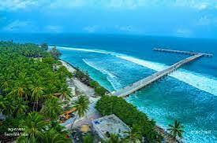
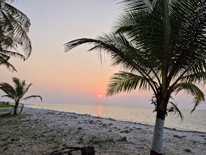
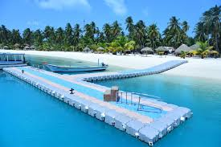
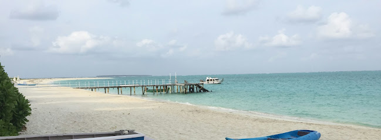
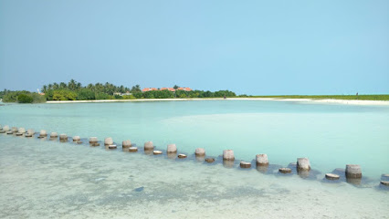
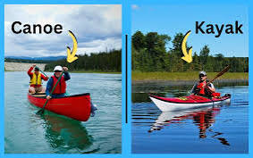
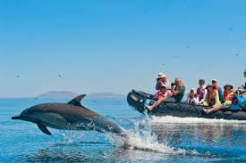
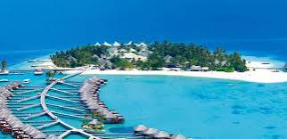

Famous cities and places
Kavaratti
- Kavaratti Aquarium: A popular attraction showcasing the rich marine life of Lakshadweep.
- Ujra Mosque: An iconic mosque known for its beautiful architecture and serene atmosphere.
- Marine Aquarium: Offers insights into various species of fish and marine ecosystems found in the region.

- Lagoon Beach: A stunning beach known for its clear waters and water sports activities.
- Deserted Islands: Nearby uninhabited islands perfect for day trips and exploring pristine nature.
- Fishery Museum: Offers insights into the local fishing culture and marine resources of Lakshadweep.
Agatti
- Agatti Island Beach: Known for its pristine white sands and clear turquoise waters, perfect for relaxation and sunbathing.
- Lagoon Beach: A stunning beach ideal for water sports like snorkeling and kayaking, surrounded by coral reefs.
- Agatti Island Airport: The only airport in Lakshadweep, providing stunning views of the islands during landing and takeoff.

- Snorkeling and Scuba Diving: Explore the vibrant underwater life, including colorful fish and coral reefs.
- Local Cuisine: Savor traditional Lakshadweep dishes, particularly seafood delicacies available at local eateries.
- Sunset Views: Enjoy breathtaking sunsets over the Arabian Sea, a perfect end to a day in paradise.
Bangaram
- Bangaram Beach: Known for its stunning white sands and crystal-clear waters, ideal for relaxation and sunbathing.
- Coral Reefs: A paradise for snorkeling and scuba diving enthusiasts, offering vibrant marine life and stunning underwater scenery.
- Water Sports: Various activities like kayaking, windsurfing, and sailing are available for adventure seekers.

- Sunset Views: The sunsets here are breathtaking, with vibrant colors reflecting on the water.
- Local Cuisine: Enjoy delicious seafood and traditional Lakshadweep dishes at nearby eateries.
- Island Hopping: Explore nearby islands like Kadmat and Kavaratti for a complete experience of Lakshadweep.
Kadmat
- Kadmat Beach: Known for its stunning white sandy shores and crystal-clear waters, perfect for relaxation and water sports.
- Water Sports Center: Offers various activities like snorkeling, scuba diving, and kayaking to explore the rich marine life.
- Sunset Point: A beautiful spot to witness breathtaking sunsets, providing a picturesque view of the horizon.

- Marine Life: Kadmat is home to diverse marine species, making it a great spot for snorkeling and underwater exploration.
- Local Culture: Experience the unique culture and traditions of the island, including local cuisine and festivals.
- Ayurvedic Spa: Enjoy traditional Ayurvedic treatments and therapies at wellness centers on the island.
Minicoy
- Minicoy Lighthouse: A historic lighthouse offering stunning views of the surrounding islands and the sea.
- Thundi Beach: A beautiful beach known for its pristine sands and clear blue waters, perfect for relaxation.
- Maliku Par: A traditional cultural site showcasing the unique heritage and lifestyle of the Maldivian community.

- Hinnavaru Beach: A tranquil beach known for its calm waters, ideal for swimming and water sports.
- Local Fish Market: A vibrant market showcasing the local fishing culture and fresh seafood.
- Watersports Activities: Opportunities for snorkeling, scuba diving, and kayaking in the stunning waters surrounding the island.
Beaches
Agatti Island Beach
- Agatti Island Beach: Known for its stunning white sand and crystal-clear waters, this beach offers a serene escape and breathtaking sunsets.
- Water Sports: Popular for various water activities such as snorkeling, scuba diving, and kayaking, making it a paradise for adventure enthusiasts.
- Coral Reefs: Explore vibrant coral reefs teeming with marine life, ideal for underwater photography and exploration.

- Local Cuisine: Enjoy fresh seafood and traditional Lakshadweep dishes at local eateries, providing a taste of island culture.
- Island Culture: Experience the rich cultural heritage of Agatti through local festivals, music, and dance.
- Relaxation: Ideal for unwinding and soaking up the sun, with opportunities for yoga and meditation by the beach.
Bangaram Beach
- Beach Overview: Bangaram Beach is a stunning tropical paradise known for its crystal-clear waters, white sandy shores, and vibrant coral reefs, perfect for relaxation and water sports.
- Activities: Visitors can enjoy snorkeling, scuba diving, and kayaking in the calm waters, along with sunbathing and beach volleyball.
- Accommodations: The beach features a range of accommodations, from luxurious resorts to cozy cottages, offering breathtaking views of the sea.

- Local Cuisine: The area offers delicious local seafood and traditional Indian dishes, making dining a delightful experience.
- Best Time to Visit: The ideal time to visit Bangaram Beach is between October and May when the weather is pleasant.
- Transportation: Accessible via boat from Agatti Island, Bangaram Beach is a serene getaway away from the hustle and bustle.
Marine Life and Coral Reefs
Kadmat Island
- Marine Life: Kadmat Island is renowned for its rich biodiversity, featuring a variety of fish species, sea turtles, and vibrant coral reefs.
- Coral Reefs: The island is surrounded by stunning coral reefs, offering excellent opportunities for snorkeling and scuba diving.
- Water Sports: Visitors can enjoy various water sports like kayaking, jet skiing, and windsurfing amidst the scenic backdrop of the island.

- Beaches: The island boasts pristine white-sand beaches that are perfect for relaxation and sunbathing.
- Ecological Tours: Visitors can partake in guided tours to learn about the unique ecosystem and conservation efforts in the region.
- Local Culture: Experience the rich culture and traditions of the local inhabitants, including their cuisine and crafts.
Minicoy Island
- Coral Reefs: Minicoy is famous for its vibrant coral reefs, home to diverse marine species and stunning underwater scenery.
- Marine Life: The waters around Minicoy boast an abundance of marine life, including colorful fish, sea turtles, and more.
- Water Sports: Popular activities include snorkeling, scuba diving, and kayaking, allowing visitors to explore the rich underwater ecosystem.

- Minicoy Lighthouse: A historic lighthouse offering stunning views of the island and the surrounding sea.
- Local Cuisine: Don't miss the opportunity to try traditional Lakshadweep dishes made with fresh seafood and coconut.
- Thundi Beach: A serene beach known for its pristine beauty and clear waters, ideal for relaxation and sunbathing.
Adventure and Water Sports
Scuba Diving and Snorkeling in Lakshadweep
- Scuba Diving: Explore the vibrant underwater world of Lakshadweep with its rich marine biodiversity, including colorful corals and exotic fish.
- Snorkeling: Experience the beauty of the coral reefs just below the surface, suitable for both beginners and experienced snorkelers.
- Kalapeni Island: A prime location for scuba diving, offering clear waters and stunning underwater landscapes.
- Bangaram Island: Known for its stunning lagoons, it’s a fantastic spot for both snorkeling and diving.
- Minicoy Island: Offers unique underwater experiences with its diverse marine life and coral formations.
- Adventure Sports: Engage in other water sports like kayaking and paddleboarding, making the most of Lakshadweep’s beautiful waters.
Kayaking and Canoeing in Lakshadweep
- Experience the Serenity: Paddle through the tranquil lagoons, surrounded by stunning coral reefs and vibrant marine life.
- Guided Tours: Join guided kayaking tours that offer insights into the local ecosystem and culture.
- Equipment Rental: Various resorts and operators provide rental services for kayaks and canoes, catering to all skill levels.

- Ideal Locations: Popular spots for kayaking include Agatti, Bangaram, and Kadmat islands, known for their calm waters.
- Safety Measures: Life jackets and safety gear are provided, ensuring a safe adventure for all participants.
- Wildlife Encounters: Keep an eye out for dolphins and various bird species while paddling through the lagoons.
Other Attractions
Dolphin Watching
- Dolphin Watching: An exhilarating experience where visitors can observe playful dolphins in their natural habitat. Tours typically take place in the early morning or late afternoon, offering stunning views of the sea and the chance to see other marine life.
- Snorkeling: Explore the vibrant coral reefs and marine biodiversity surrounding the islands.
- Beach Activities: Enjoy various activities such as sunbathing, beach volleyball, and leisurely strolls along the pristine shores.

- Scuba Diving: Dive into the crystal-clear waters to discover vibrant coral reefs and diverse marine life.
- Water Sports: Engage in thrilling activities like kayaking, windsurfing, and jet skiing.
- Island Hopping: Explore the stunning islands of Lakshadweep, each offering unique landscapes and experiences.
Lakshadweep
- Tuna Canning Factory, Minicoy: A significant facility in Minicoy known for processing tuna fish, providing insight into local fishing and canning industries.
- Minicoy Lighthouse: An iconic lighthouse offering stunning views of the island and the surrounding sea, a great spot for photography.
- Shipwreck Diving: Adventure seekers can explore underwater shipwrecks, a popular activity among divers.

- Agatti Island: Known for its beautiful beaches and water sports, a great destination for relaxation and adventure.
- Bangaram Island: Famous for its coral reefs and water activities, offering stunning natural beauty.
- Kalapeni Beach: A serene beach ideal for sunbathing and enjoying picturesque sunsets.